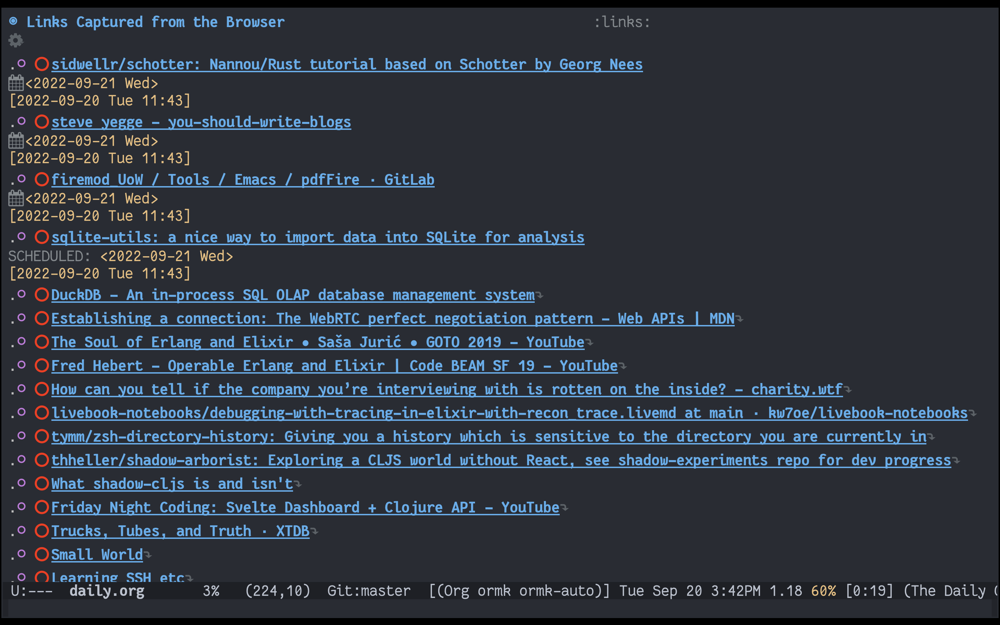

My corner on the Internet.
Hello reader! This is a short update about the very cool TabFS, which is a browser extension that maps your open tabs to the filesystem using Fuse. Think /proc but for the browser. This is an excellent idea, because now I can run all the tools that I am already familiar with on my tabs!
As I was reading through the TabFS page (linked above), I thought to myself: "this is so much RC energy!". So I checked, and lo and behold, Omar Rizwan is an RC Alum :D
The internet is full of interesting stuff that hijacks my attention. I end up getting completely distracted from my planned tasks. My solution to this is: I open all the links I want, but I don't read anything immediately. Instead, I capture the link in Org-Mode and schedule it for later (generally tomorrow). This way, when I am planning the day, I have a bunch of links in my Agenda. I choose which ones I want to read on any given day and defer / delete the rest. I use the excellent Bulk Scatter tool built into Org Agenda for this.
I thought: Why do this manually? Enter TabFS
With TabFS installed, it was a small step to go from there to org-mode. My go-to scripting tool is Babashka. Here is the meat of the code:
(require '[babashka.fs :as fs]
'[clojure.string :as cs])
(defn build-tab-info
"Collects the title and URL for all open tabs using TabFS."
[opts]
(map (fn [t]
{:title (first (fs/read-all-lines (str t "/title.txt")))
:url (first (fs/read-all-lines (str t "/url.txt")))})
(fs/list-dir (:tab-dir opts))))
(def plain-text-template
"The template for creating the org-mode plain-text entry. Placeholders
are for the following items (in order):
1. Org-Mode Heading level: default value is 1.
2. URL of the link to the stored.
3. Title of the link to be stored.
4. Date when the Tab is scheduled for reading: default is tomorrow.
5. Date when the Tab was captured."
"%s TODO [[%s][%s]]\nSCHEDULED: %s\n%s")
(defn tabs->text
"Convert the list of open tabs to a wall of text that can be stored in
Plain-Text."
[opts]
(->> (build-tab-info opts)
(map (fn [t]
(format plain-text-template
(apply str (repeat (:org-mode-heading-level opts) "*"))
(:url t)
(:title t)
(:scheduled-on opts)
(:captured-on opts))))
(cs/join \newline)))
I wrote a CLI script for the code, here is what the help command looks like:
✦ ➜ bb-plain-text-tabs --help
Convert all open tabs to plain text Org Mode format. Optionally, close the open tabs.
Usage: bb-plain-text-tabs [options]
Options:
-fs, --tabfs-mnt-path *REQUIRED* TabFS mount path. The path on the filesystem where TabFS is mounted.
-hl, --org-mode-heading-level 1 The heading level at which link headings will be stored in Org Mode.
-s, --scheduled-on <date> tomorrow Date on which to schedule reading this batch of links, in yyyy-MM-dd format.
-del, --delete-tabs <del> false Boolean value to indicate if browser tabs should be closed
Examples:
bb-plain-text-tabs -fs <TabFS Mount Path> # Convert Open Tabs to Plain Text
bb-plain-text-tabs -fs <TabFS Mount Path> --delete-tabs # Delete tabs and print plain text
bb-plain-text-tabs -fs <TabFS Mount Path> | tee tabs.org # Capture Plain Text output to file
Finally, this is the output, in Org Mode:

I hope all the Emacs/Org-mode folks reading this find it useful! Thank you to Omar for the excellent TabFS tool!
Last Updated: 2022-09-20T22:20:00Z